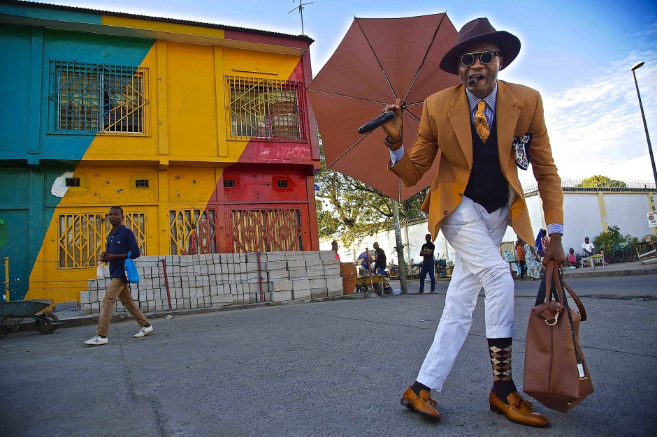
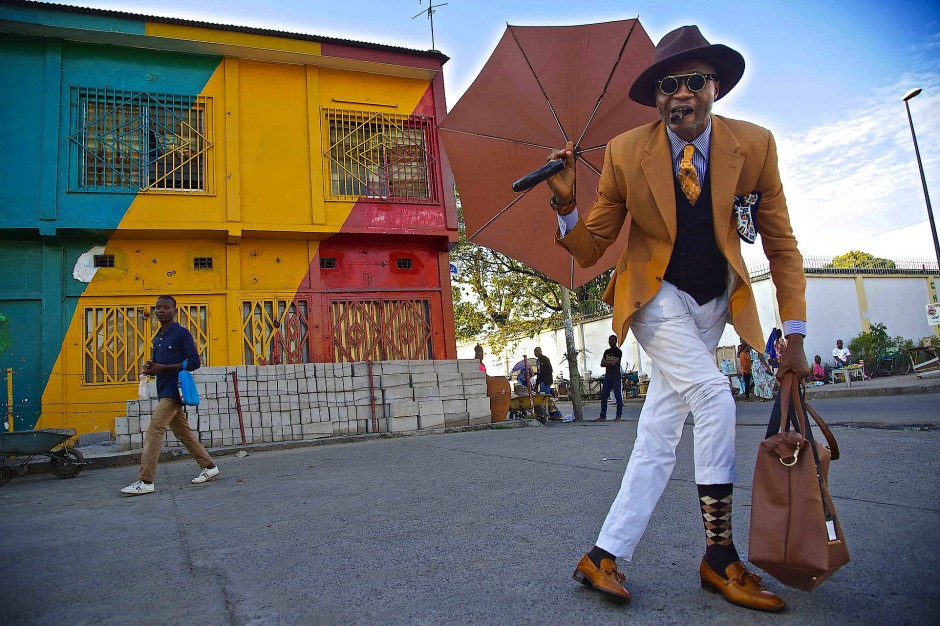

Culture of the Republic of the Congo
Culture of the Republic of the Congo is rich, diverse and made up of a mix of about 4.5 million people in 2015 and just as many languages and customs. Half of Congolese people follow traditional beliefs, and there are 15 principle Bantu groups and more than 70 subgroups. The other half are 35% Roman Catholic, 15% other Christian and 2% Muslim. The region was dominated by Bantu-speaking tribes, who built trade links leading into the Congo River basin. Congo-Brazzaville was formerly part of the French colony of Equatorial Africa.
Language and writings
The official language of the Republic of Congo is French. French is spoken by 56% of the Congolese population (78% of the population over 10 years), the second highest percentage of Africa in 2010, behind that of Gabon2. About 88% of Brazzavillans over 15 years of age say they have an easy expression in French. The Republic of Congo has a number of well-known writers in Africa and the French-speaking world: Alain Mabanckou, Jean-Baptiste Tati Loutard, Jeannette Balou Tchichelle, Henri Lopes, Lassy Mbouity and Tchicaya U Tam'si. Several artistic genres such as Congolese cinema struggle to make their breakthrough. After a promising start in the 1970s, the turbulent political environment and the closing of cinemas made production difficult. The country produces no feature films a year and filmmakers broadcast their production directly in video. In the end, in Congo-Brazzaville, culture remained until then the poor relation of the investments of successive governments.
SOME PICTURES ABOUT THE CULTURE


 
YES I LIKE IT
THANKS!